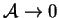
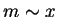
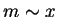

Klosse and Ullersma (1973) were the first to attempt an analytical description
of the nonisothermal vapour transport across a gas-filled enclosure. They
considered the limit
 for plane (
 )
vertical rectangular cavities. Their
method was somewhat irrational, however, and was thoroughly criticized by
Jhaveri and Rosenberger (1982; §3.3.4). For example,
they assumed that the temperature would depend only on
)
vertical rectangular cavities. Their
method was somewhat irrational, however, and was thoroughly criticized by
Jhaveri and Rosenberger (1982; §3.3.4). For example,
they assumed that the temperature would depend only on  , on account of the
small value of
, on account of the
small value of  . This is correct (Cormack, Leal & Imberger 1974),
but would equally imply , so that only a trivial
mass transfer result would be obtained. Further, like Meyer and Kostin (1975;
see comments in §3.2.2),
they omitted the inertial terms from the equation
of motion but retained the advective component of the vapour flux.
. This is correct (Cormack, Leal & Imberger 1974),
but would equally imply , so that only a trivial
mass transfer result would be obtained. Further, like Meyer and Kostin (1975;
see comments in §3.2.2),
they omitted the inertial terms from the equation
of motion but retained the advective component of the vapour flux.